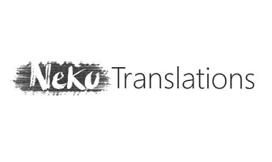
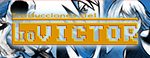
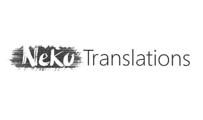
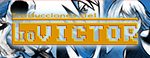

GRUPOS AMIGOS


 



Título original: Attack of the Friday Monsters! A Tokyo Tale
Año: 2013
Plataforma: Nintendo 3DS
Región: Japón/USA
Género: Simulación de vida
"Los héroes eran tan grandes como los monstruosos kaiju,
pero se comportaban como amigos de los niños de Japón o
incluso como padres que debían protegerlos sin importar
el sacrificio que tuvieran que hacer...".
"Los monstruos atacan el viernes" es un pequeño gran juego
desarrollado por Millenium Kitchen, estudio a cargo de
Kaz Ayabe, creador de entrañables títulos como los que
conforman la saga "Boku no Natsuyasumi" entre otros.
Desde GradienWords os queremos traer la versión en español,
fruto del duro trabajo de estos dos últimos años, para que
así, este título pueda ser disfrutado por la mayor cantidad
de gente de habla hispana como sea posible.
Esperamos que disfrutéis de nuestra traducción y que este juego
os haga revivir ese momento tan especial como es la infancia.